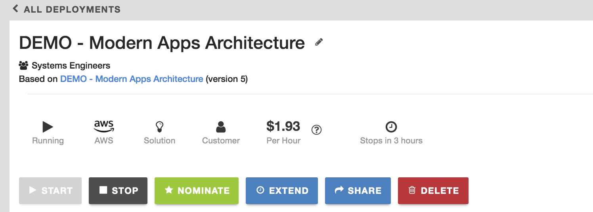
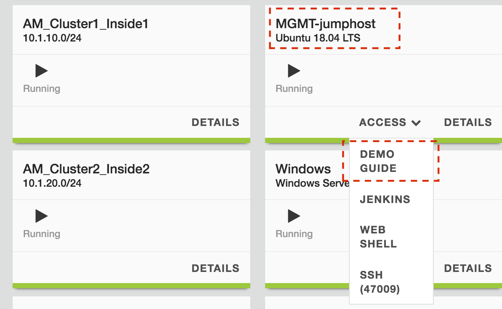
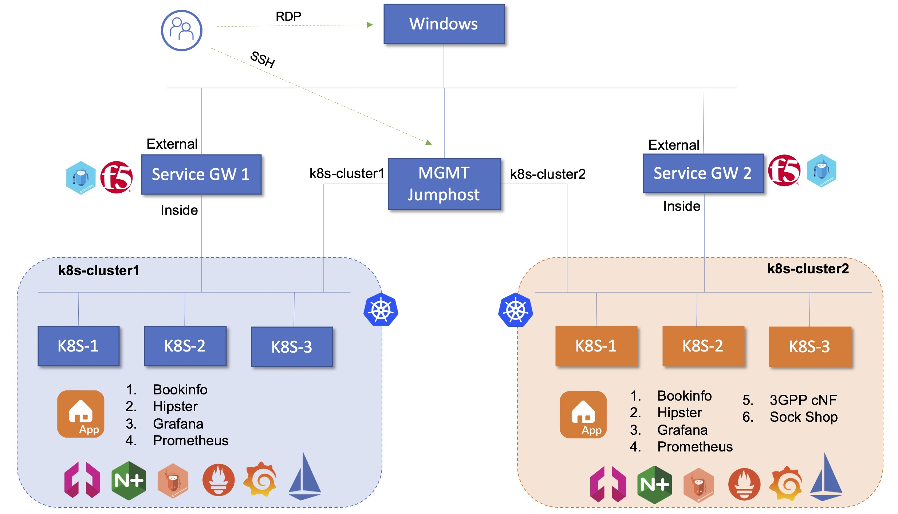
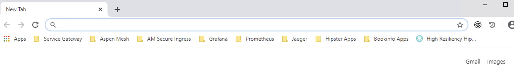
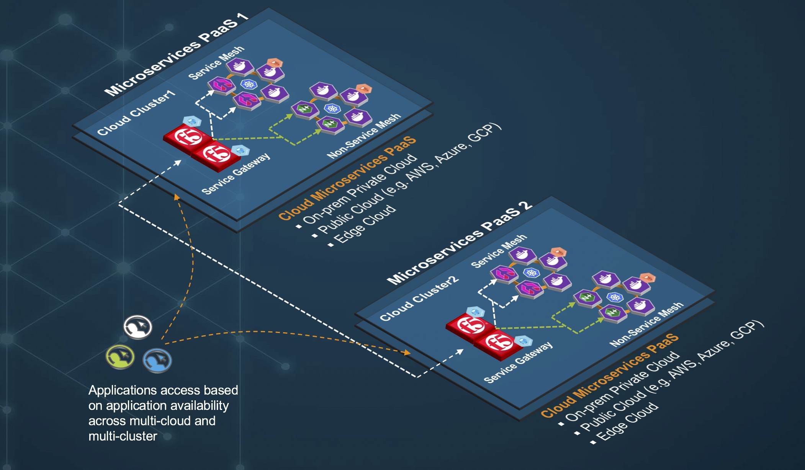
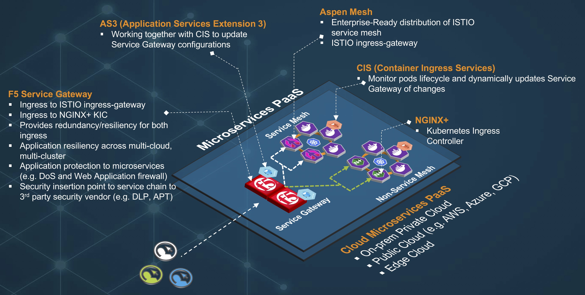

Modern Application Architecture Source | Edit on
Getting Started¶
Please follow the instructions provided to run your demo.
Note
This is NOT a lab guide to build microservices PaaS enviroment. It is a DEMO guide for Modern Application Architecture Blueprint. All work for this guide can be performed from Windows jumphost (RDP) for browser application access and Linux MGMT Jumphost (SSH) for kubectl CLI.
Demo guide located on the same server as MGMT Jumphost and can be access via the following
Environment:¶
Network Resources
| IP Address | Network | |
|---|---|---|
| Service Gateway 1 | 10.1.1.4 | Management |
| Service Gateway 2 | 10.1.1.5 | Management |
| Mgmt JumpHost | 10.1.1.14 | Management |
| Windows JumpHost | 10.1.1.13 | Management |
| Cluster1-k8s-01 | 10.1.1.245 | AM_Cluster1_inside1 |
| Cluster1-k8s-02 | 10.1.20.245 | AM_Cluster1_inside1 |
| Cluster1-k8s-03 | 10.1.10.131 | AM_Cluster1_inside1 |
| Cluster2-k8s-01 | 10.1.10.132 | AM_Cluster1_inside2 |
| Cluster2-k8s-02 | 10.1.10.120 | AM_Cluster1_inside2 |
| Cluster2-k8s-03 | 10.1.10.115 | AM_Cluster1_inside2 |
Bookmarks on Chrome browser on Windows Jumphost
Tools used for the foundational architecture.¶
| Tools | |
|---|---|
| 1 | Multiple Kubernetes Cluster (k8s-cluster1 & k8s-cluster2) |
| 2 | Calico CNI |
| 3 | F5 BIG-IP BEST Bundle (Service Gateway) |
| 4 | Aspen Mesh Service Mesh |
| 5 | NGINX+ Kubernetes Ingress Controller (KIC) |
| 6 | F5 Container Ingress Services (CIS) |
| 7 | F5 Application Services 3 (AS3) |
| 8 | Prometheus |
| 9 | Grafana |
| 10 | Jaeger |
| 11 | Glusterfs Persistent Storage |
| 12 | Jenkins |
| 13 | NGINX App Protect |
| 14 | Local Docker Registry |
Note
The blueprint may took approx 5 to 10min to fully operational as it has close to 100 pods to start. Please ensure Aspen Mesh fully running before you commence your demo. SSH onto MGMT Jumphost and ensure 1. “kubectl -n istio-system get pod (ensure all status “Running” with the right Ready. e.g. 1/1 or 2/2) 2. Virtual Server on Service Gateway 1 and Service Gateway 2 are healthy
High Level Architecture¶
 Why Modern Application Architecture?¶
- Applications are key differentation in a competitive market.
- Rapid application software development lifecycle.
- Accelerate time to market of applications delivery.
- Increase business agility.
- Promote Agile methodology.
- Distributed and de-compartmentalized components of an applications into a smaller components/services and each team/devops has automonus and can focus on building individual services in parallel.
- Cloud native and cloud friendly.
- xxx
- yyy
- zzz